Story
高中生小舞加入一个灵异社后，知晓了“fork&cake”的概念，同时，
她的好友在某一日突然失踪。这件事同时引起了前警察桑克瑞德的注意，
桑克瑞德一边秘密调查这件事，一边深陷名为“小舞”的泥潭……
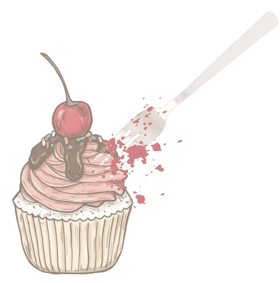
返回
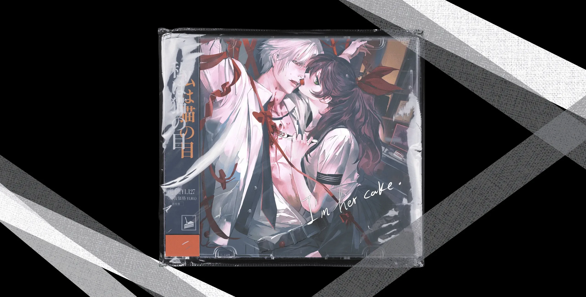
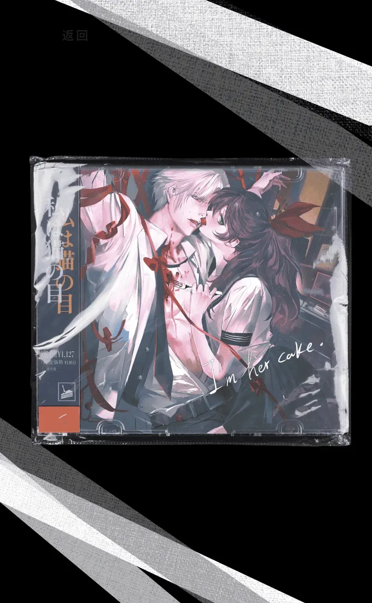
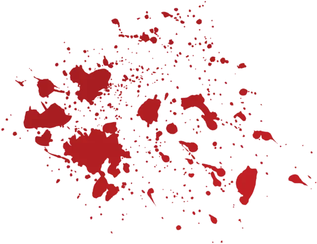
高中生小舞加入一个灵异社后，知晓了“fork&cake”的概念，同时，
她的好友在某一日突然失踪。这件事同时引起了前警察桑克瑞德的注意，
桑克瑞德一边秘密调查这件事，一边深陷名为“小舞”的泥潭……

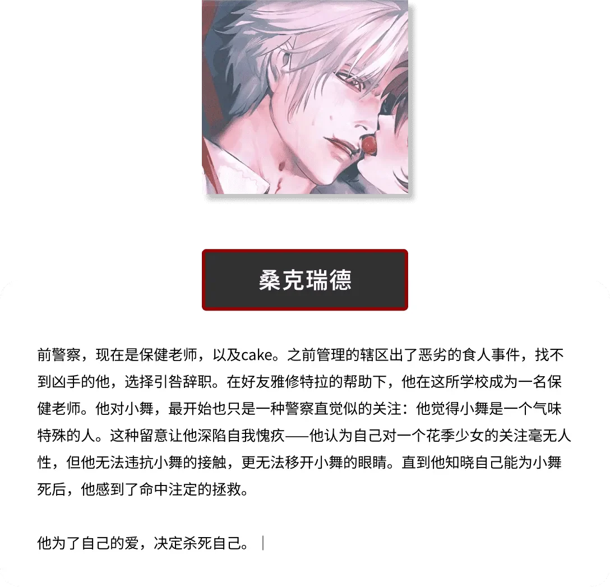
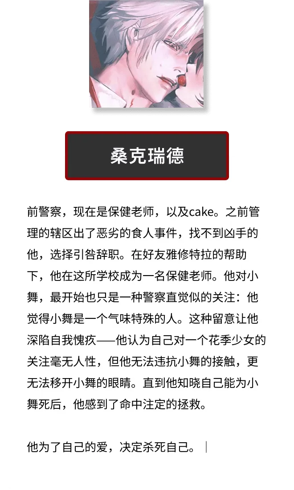
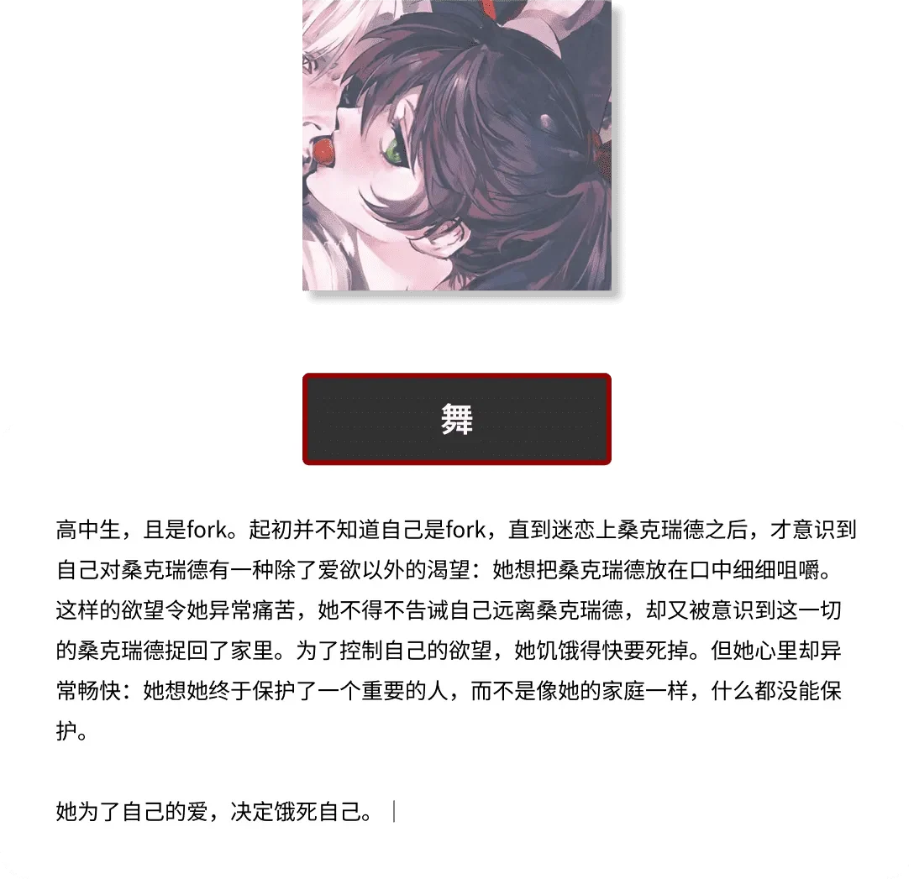
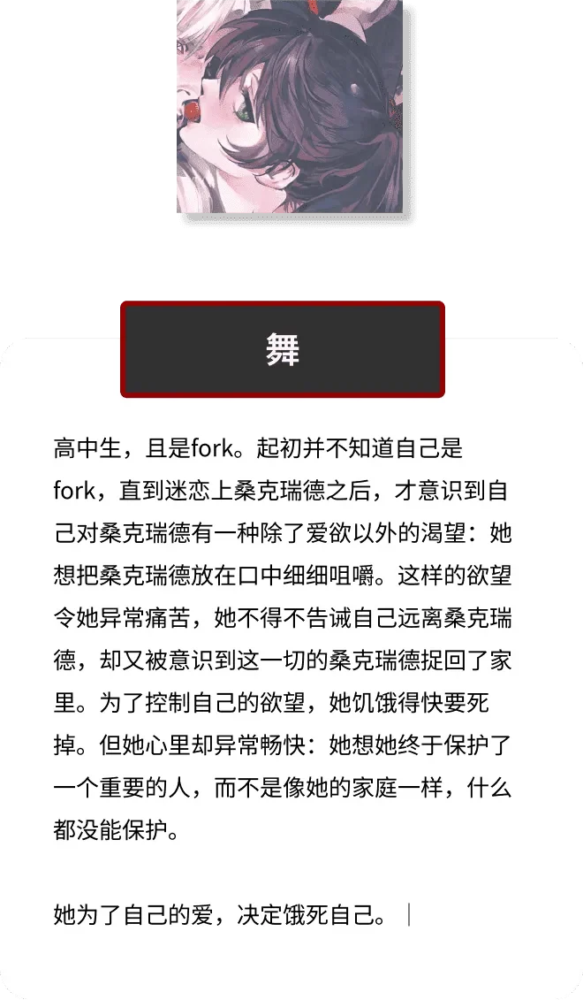
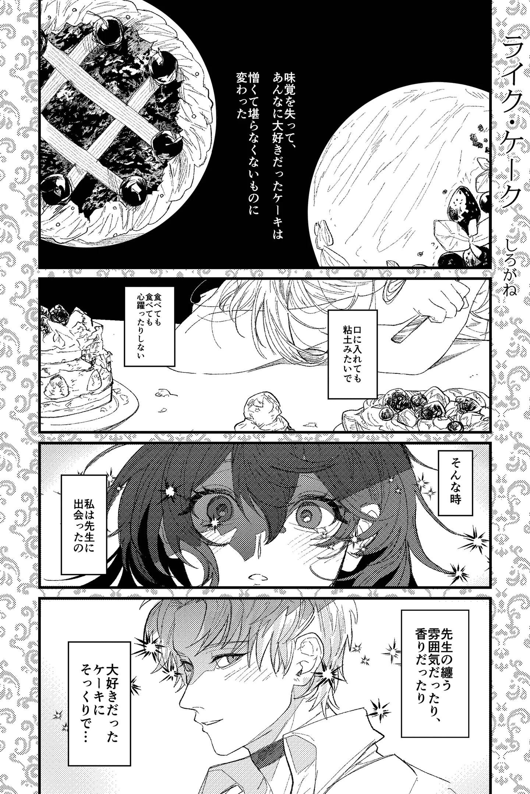

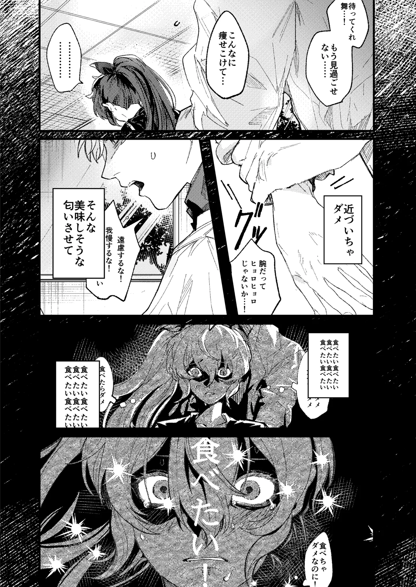
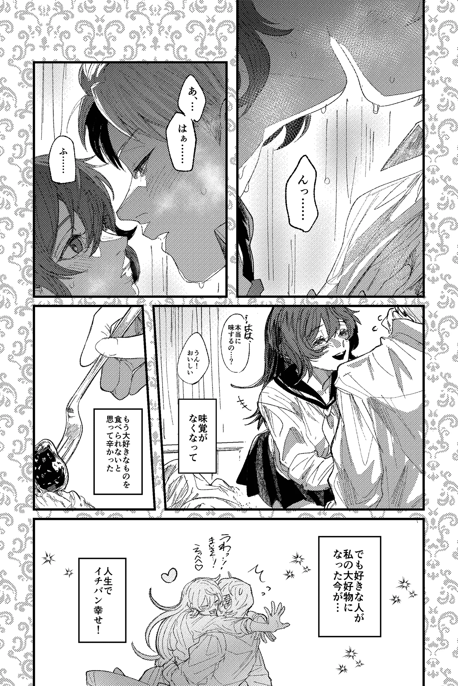
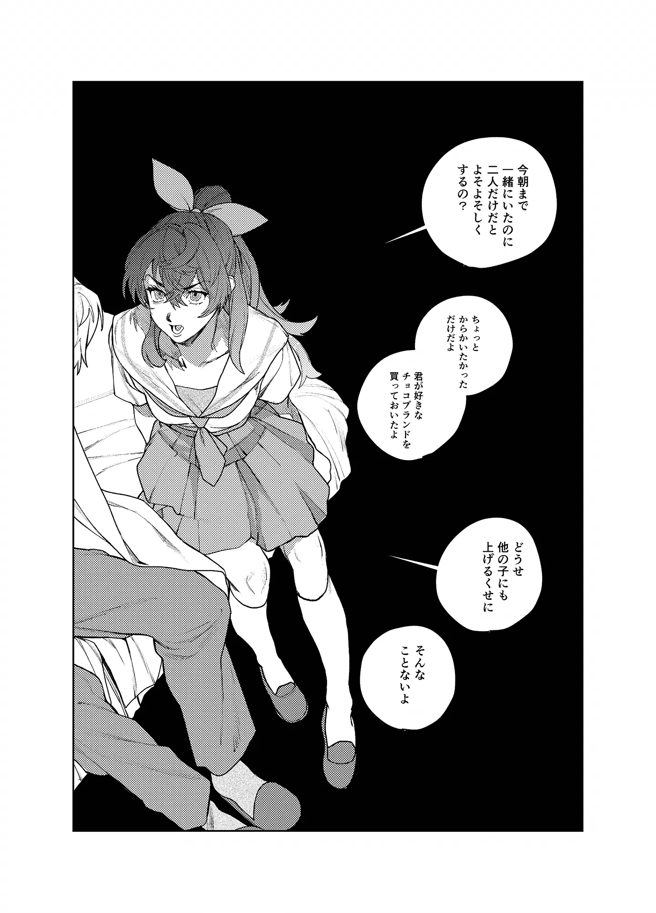
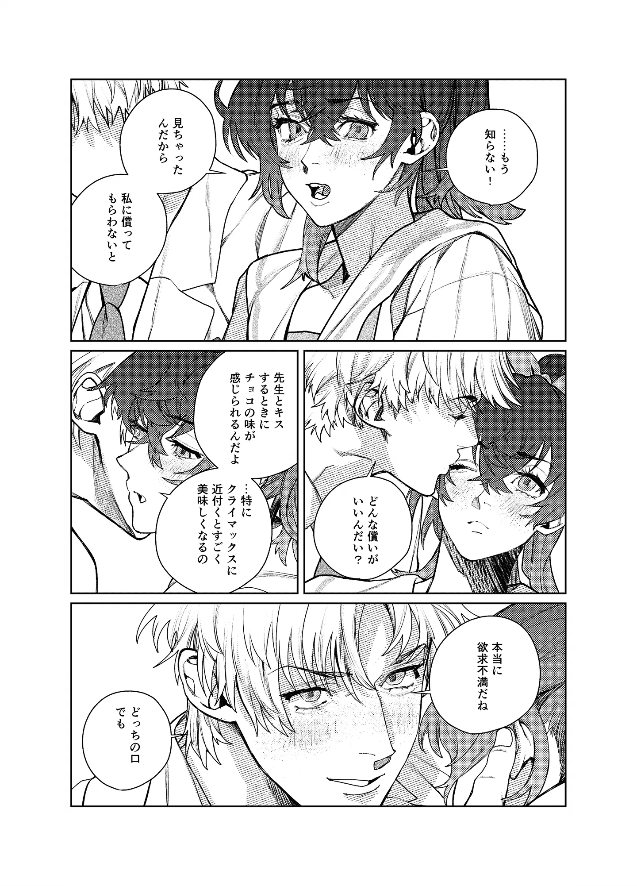